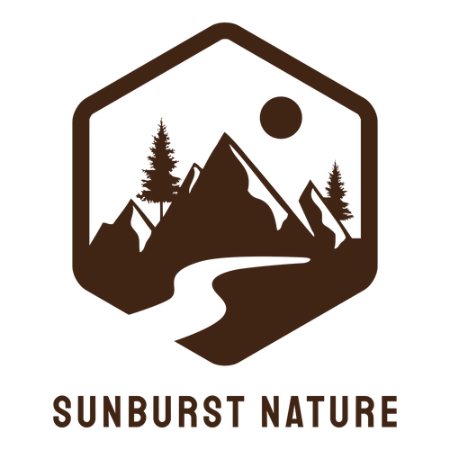
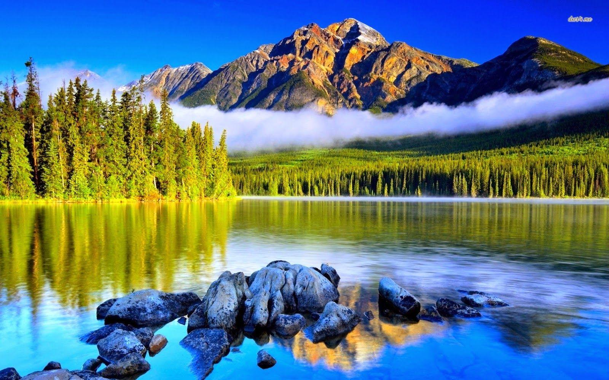

Nature is the connection between the physical world surrounding us and the life inside us. Nature is God’s most precious and valuable gift to humans. It is the principal source of all essential nutrients for all living things on the planet. ‘Nature’ is one of the topics on which we might be asked to write a paragraph. Check the samples provided in the article to learn how to write one on your own.Nature is the connection between world It is the principal source of all essential nutrients for all living things on the planet. ‘Nature’ is one of the topics on which we might be asked to write a paragraph.Nature is the connection between the physical world

Nature is the connection between the physical world surrounding us and the life inside us. Nature is God’s most precious and valuable gift to humans. It is the principal source of all essential nutrients for all living things on the planet. ‘Nature’ is one of the topics on which we might be asked to write a paragraph. Check the samples provided in the article to learn how to write one on your own.Nature is the connection between the physical world surrounding us and the life inside us. Nature is God’s most precious and valuable gift to humans. It is the principal source of all essential nutrients for all living things on the planet. ‘Nature’ is one of the topics on which we might be asked to write a paragraph. Check the samples provided in the article to learn